基于强化学习的 ABS 制动控制系统 · 数字孪生 → 策略训练 → 成果部署
从 0 到 1 完成基于强化学习的汽车智能底盘制动模块 ABS 控制系统研发。ABS 通过控制电磁阀使轮胎滑移率控制在 0.2 附近，防止制动时轮胎抱死。市面上主流为开关式电磁阀（0/1 离散控制），连续式高精电磁阀已被 Tier 1 垄断。
增压阀、保压阀、减压阀协同，四轮独立调节。
实时反馈各轮缸制动压力，闭环控制关键信号。
接收轮速、滑移率、车身姿态，输出阀体指令。
Simulink 单轮
Amesim 整车
DQN · PPO · GAIL
四轮独立控制
偏转 -83.8%
基于 MathWorks 官方 防抱死制动系统建模 搭建 Simulink 单轮仿真环境。
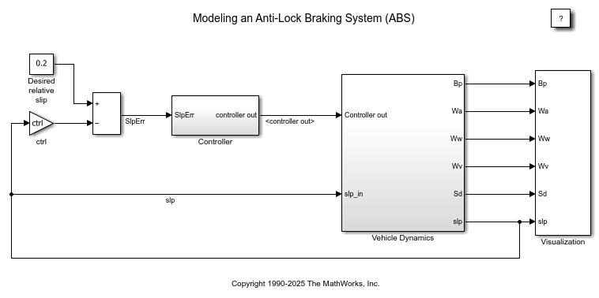
Simulink 模型结构
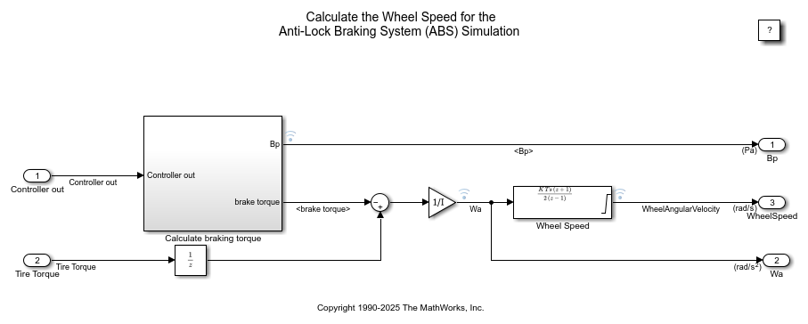
数据流向与控制回路
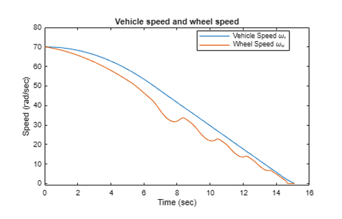
MathWorks 官方 ABS Simulink 模型
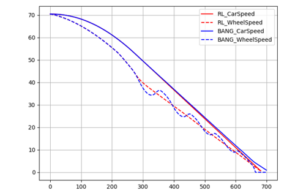
官方 VS RL 模型
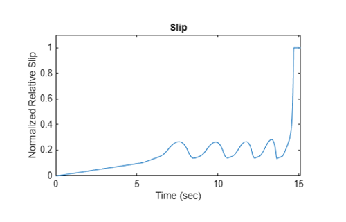
MathWorks 官方 ABS Simulink 滑移率曲线
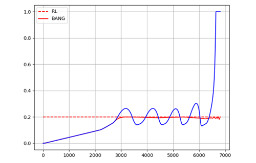
官方 VS RL 滑移率
基于 Amesim 搭建四轮整车车辆动力学与液压制动数字孪生的电磁阀开关控制强化学习训练。
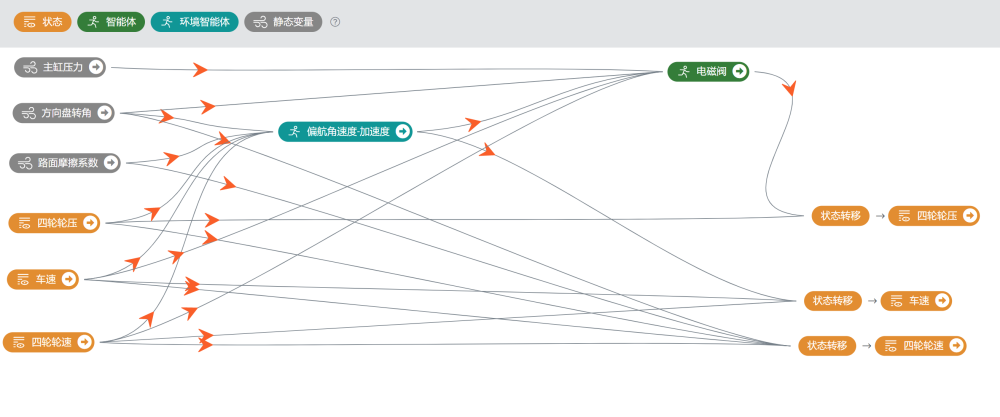
ReinMotor虚拟底盘模型
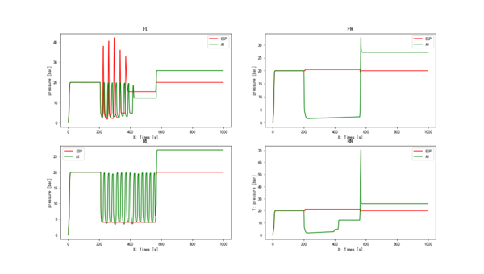
四轮制动压力曲线对比
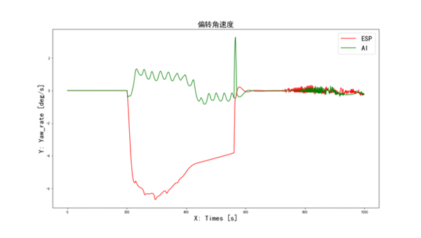
偏转角速度对比
基于采集的 ABS 阀体控制时序数据，使用 RNN 构建四轮轮缸压力动态预测模型，验证数据驱动的液压系统建模能力。
使用两条验证数据评估动态模型的预测效果。每幅图包含四个子图，分别对应四个轮胎的压力值——蓝色线为真实值，橙色线为预测值。预测值与真实值基本接近，模型准确捕获了轮缸压力的时序动态特性。
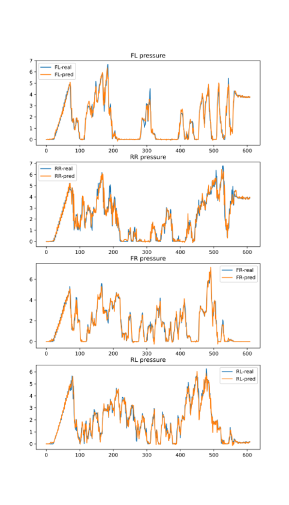
验证数据 ① · 四轮压力预测 vs 真实
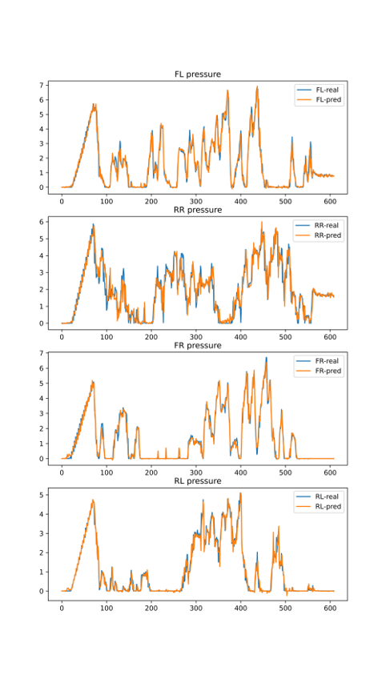
验证数据 ② · 四轮压力预测 vs 真实
使用 revive_p 模型对实车数据（5 条，对开路面左侧低附 + ESP 开启）进行环境建模，训练集 3 条 / 验证集 2 条。输入：四轮轮压、路面附着系数、四轮轮速、车速；输出：三向加速度、偏航角速度、下一时刻车速与轮速。
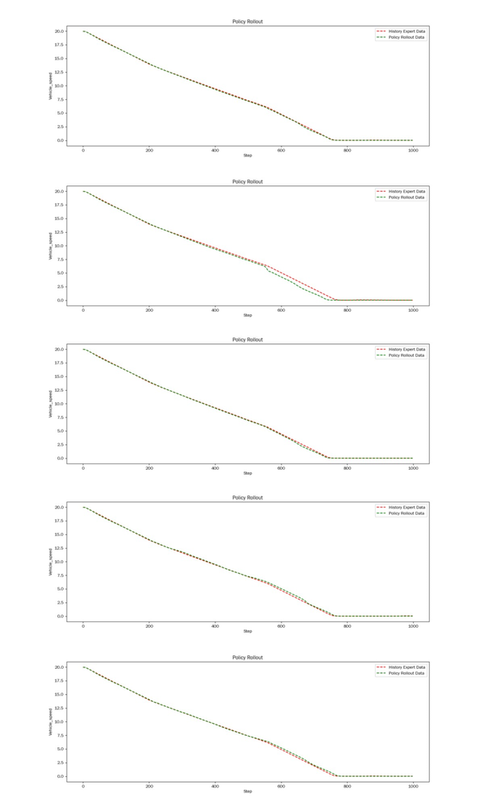
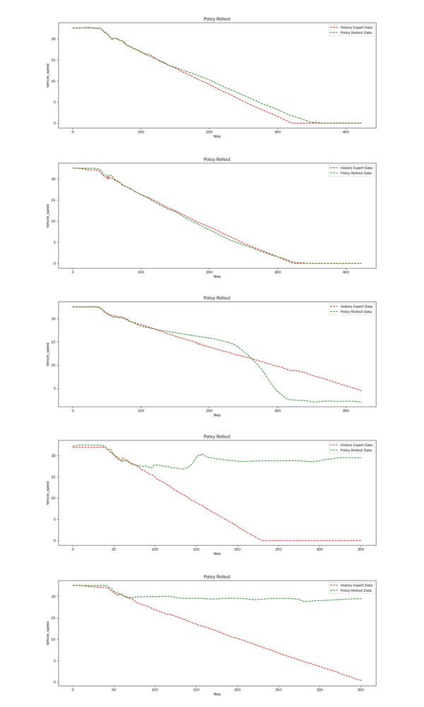
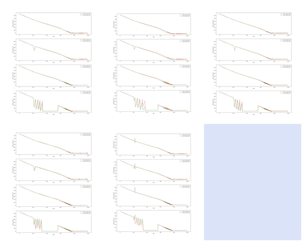
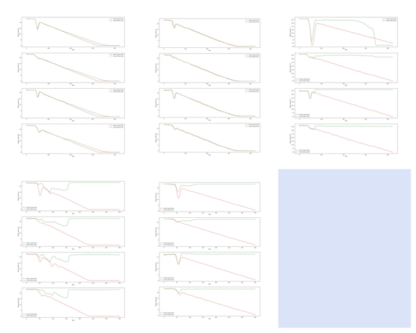
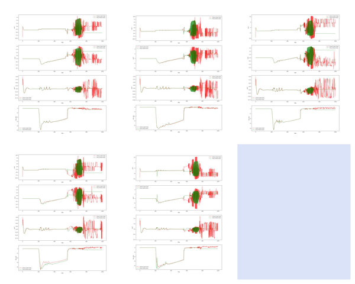
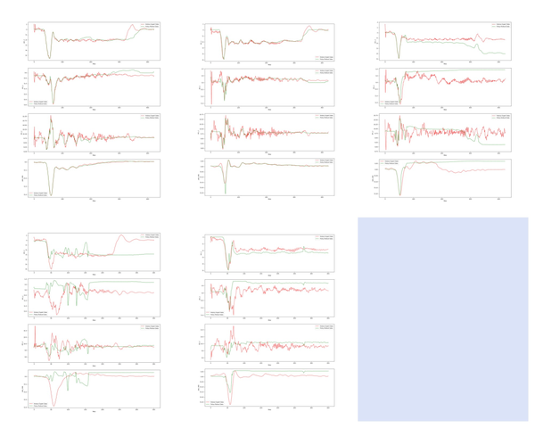
在广德试验场进行多路面工况制动测试：高附路面（90 km/h）、对接路面（55/65 km/h）、对开路面（60 km/h）、低附路面（洒水玄武岩）。